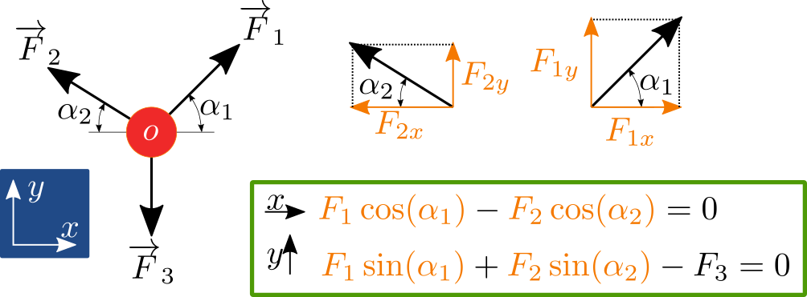
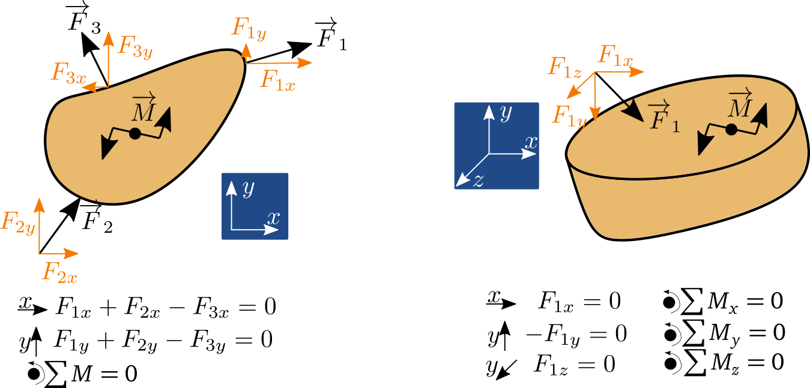
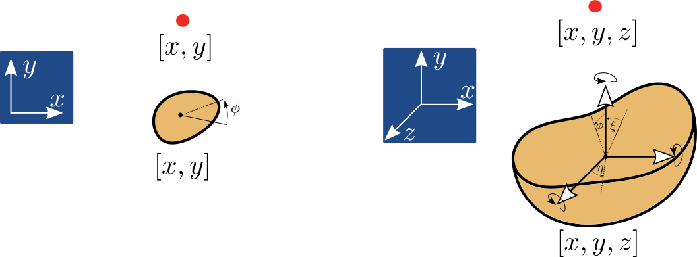

Statika hmotného bodu a tuhého tělesa, stupně volnosti (☕)¶
Rovnováha hmotného bodu¶
Hmotný bod je v rovnováze tehdy, pokud jsou v rovnováze síly, které na něj působí, tedy vektorový součet sil \(F\) musí být roven nule
Pro výpočet nejdříve zavedeme vhodný souřadnicový systém. Zpravidla kartézský, ortonormálný. Někdy se může hodit vyjádřit síly v polárním souřadnicovém systému nebo v obecném, libovolném křivočarém.
Poznámka
Někdy je možné vypozorovat jakýsi typický směr v silách, které působí na těleso a pak je výhodné umístit směr souřadnicového systému tak aby korespondoval se směrem sil. Ulehčíme si tak práci s hledáním úhlů a rozkladem.

Rovnováha tuhého tělesa¶
Rovnováha tuhého tělesa musí zahrnovat i rovnováhu momentů, tedy
Protože těleso má měřitelný tvar, může rotovat díky momentovým účinkům od sil.

Poznámka
Rovnováha momentů musí platit k libovolnému bodu tělesa. Místo, ke kterému počítáme rovnováhu momentů zpravidla vybíráme tak abychom měli co nejmenší počet momentových přízpěvků nebo starostí s hledáním ramena momentů.
Podle počtu pohybů, které hmotný bod nebo těleso může vykonávat v daném souřadnicovém systému, tak mluvíme o stupních volnosti.

Hmotný bod ve 2D může vykonávat posuvný pohyb, který lze vyjádřit kombinací pohybu ve směru osy \(x\) a a osy \(y\). Rotaci není potřeba uvažovat protože bod je bez rozměrný a tak na nem nelze definovat rameno rotace. Podobně platí pro hmotný bod i ve 3D, kde ovažujeme navíc ve stejném duchu souřadnici \(z\).
Varování
Pro výpočet momentové rovnováhy musí zvolit kladnou směr otáčení, který se nesmí měnit během výpočtu. Zpravidla je kladný směr uvažován proti směru otáčení hodinových ručiček, avšak není to podmínka.
Tuhé těleso má měřitelný rozměr a tak kromě pohybu vyjádřitelného ve třech osách (tj. posuvné stupně volnosti v \(x\), \(y\) a \(z\)) musíme uvažovat i obecnou rotaci, kterou lze opět vyjádřit jako kombinaci základních rotací okolo dílčích os (\(\phi\), \(\xi\) a \(\eta\)), tedy tří rotačních stupňů volnosti.
Platí tedy, že počet stupňů volnosti pro:
hmotný bod ve 2D: 2 posuvy
hmotný bod ve 3D: 3 posuvy
tuhé těleso ve 2D: 3 (2 posuvy + 1 rotace)
tuhé těleso ve 3D: 6 (3 posuvy + 3 rotace)